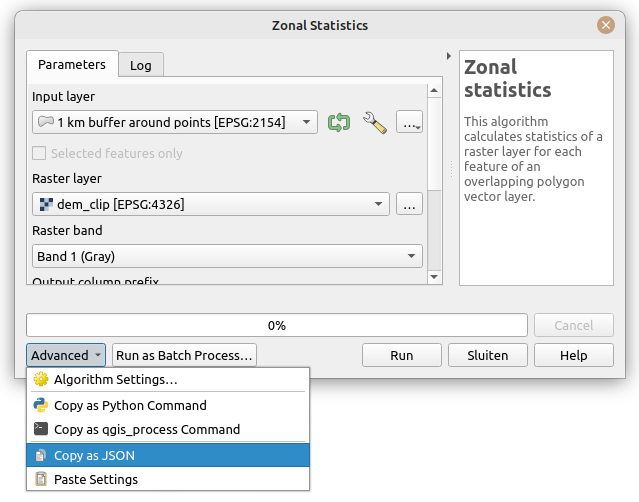

The goal of qgisprocess is to provide an R interface to the geoprocessing algorithms of QGIS, a popular and open source desktop geographic information system (GIS) program. The package is a re-implementation of functionality provided by the archived RQGIS package, which was partially revived in the RQGIS3 package.
Installation
qgisprocess
To install the latest CRAN release, just run:
install.packages("qgisprocess")You can install the development version from GitHub with:
# install.packages("remotes")
remotes::install_github("r-spatial/qgisprocess")QGIS
The qgisprocess package wraps the standalone qgis_process command-line utility, which is available in QGIS >= 3.16.
The package is meant to support current QGIS releases, i.e. both the latest and the long-term release. Although older QGIS releases are not officially supported, it may work since QGIS 3.16. Installation instructions for all platforms are available at https://download.qgis.org/.
If a recent version of QGIS isn’t available for your OS, you can use the Geocomputation with R Docker image with QGIS installed (docker pull ghcr.io/geocompx/docker:qgis). See the vignette on ‘getting started’ for more information.
Package configuration
If the automatic configuration fails (or if you have more than one QGIS installation and would like to choose which one is used), you can set options(qgisprocess.path = "path/to/qgis_process"). Specify the qgisprocess.path option in your .Rprofile, to make your choices persistent between sessions. You can run qgis_configure() to reconfigure the package, or just qgis_configure(use_cached_data = TRUE) to see the gritty details!
library(qgisprocess)
#> Attempting to load the package cache ... Success!
#> QGIS version: 3.32.1-Lima
#> Having access to 1868 algorithms from 13 QGIS processing providers.
#> Run `qgis_configure(use_cached_data = TRUE)` to reload cache and get more details.Functionality
Most functions start with the qgis_ prefix, so that functions can be found more easily using tab completion.
The main function is qgis_run_algorithm(algorithm = , ...). It specifies the geoprocessing algorithm to be called with a "provider:algorithm" formatted identifier, e.g. "native:convexhull" or "gdal:hillshade", and it passes the algorithm arguments as R function arguments.
Additional functions are provided to discover available geoprocessing algorithms, retrieve their documentation, handle processing results, manage QGIS plugins, and more.
Spatial layers can be passed to qgis_run_algorithm() as file paths but also as sf, stars, terra or raster objects.
A structured overview of functions is available at https://r-spatial.github.io/qgisprocess/reference/index.html. To get started, read the ‘getting started’ vignette and use the cheat sheets!
Note that R package qgis extends on qgisprocess by providing a separate R function for each geoprocessing algorithm. In addition, it makes the QGIS algorithm documentation available in the corresponding R function documentation.
Example
The following example demonstrates the buffer algorithm in action.
input <- sf::read_sf(system.file("shape/nc.shp", package = "sf"))
result <- qgis_run_algorithm(
"native:buffer",
INPUT = input,
DISTANCE = 1,
DISSOLVE = TRUE
)
#> Argument `SEGMENTS` is unspecified (using QGIS default value).
#> Using `END_CAP_STYLE = "Round"`
#> Using `JOIN_STYLE = "Round"`
#> Argument `MITER_LIMIT` is unspecified (using QGIS default value).
#> Argument `SEPARATE_DISJOINT` is unspecified (using QGIS default value).
#> Using `OUTPUT = qgis_tmp_vector()`
result
#> <Result of `qgis_run_algorithm("native:buffer", ...)`>
#> List of 1
#> $ OUTPUT: 'qgis_outputVector' chr "/tmp/RtmpX60EOv/file2d652e33f3c4/file2d6572d31d21.gpkg"
output_sf <- sf::st_as_sf(result)
plot(sf::st_geometry(output_sf))
Some tips
You can read the help associated with an algorithm using qgis_show_help().
qgis_show_help("native:buffer")It may also be useful to run an algorithm in the QGIS GUI to determine how the various input values are translated to string processing arguments. This can be done using the ‘Advanced’ dropdown, by copying either the qgis_process command string or the JSON string:

Note that the JSON string can be passed directly to qgis_run_algorithm()!
You can search for algorithms with qgis_search_algorithms() (string matching with regex).
qgis_search_algorithms(algorithm = "buffer", group = "[Vv]ector")
#> # A tibble: 11 × 5
#> provider provider_title group algorithm algorithm_title
#> <chr> <chr> <chr> <chr> <chr>
#> 1 gdal GDAL Vector geoprocessing gdal:bufferv… Buffer vectors
#> 2 gdal GDAL Vector geoprocessing gdal:oneside… One side buffer
#> 3 grass7 GRASS Vector (v.*) grass7:v.buf… v.buffer
#> 4 native QGIS (native c++) Vector geometry native:buffer Buffer
#> 5 native QGIS (native c++) Vector geometry native:buffe… Variable width…
#> 6 native QGIS (native c++) Vector geometry native:multi… Multi-ring buf…
#> 7 native QGIS (native c++) Vector geometry native:singl… Single sided b…
#> 8 native QGIS (native c++) Vector geometry native:taper… Tapered buffers
#> 9 native QGIS (native c++) Vector geometry native:wedge… Create wedge b…
#> 10 qgis QGIS Vector geometry qgis:variabl… Variable dista…
#> 11 sagang SAGA Next Gen Vector general sagang:shape… Shapes bufferA full list of available algorithms is returned by qgis_algorithms().
qgis_algorithms()
#> # A tibble: 1,868 × 24
#> provider provider_title algorithm algorithm_id algorithm_title
#> <chr> <chr> <chr> <chr> <chr>
#> 1 3d QGIS (3D) 3d:tessellate tessellate Tessellate
#> 2 cartographytools Cartography tools cartographyt… averagelines Average linest…
#> 3 cartographytools Cartography tools cartographyt… collapsedua… Collapse dual …
#> 4 cartographytools Cartography tools cartographyt… removecross… Remove cross r…
#> 5 cartographytools Cartography tools cartographyt… removeculde… Remove cul-de-…
#> 6 cartographytools Cartography tools cartographyt… removeround… Remove roundab…
#> 7 gdal GDAL gdal:aspect aspect Aspect
#> 8 gdal GDAL gdal:assignp… assignproje… Assign project…
#> 9 gdal GDAL gdal:bufferv… buffervecto… Buffer vectors
#> 10 gdal GDAL gdal:buildvi… buildvirtua… Build virtual …
#> # ℹ 1,858 more rows
#> # ℹ 19 more variables: provider_can_be_activated <lgl>,
#> # provider_is_active <lgl>, provider_long_name <chr>, provider_version <chr>,
#> # provider_warning <chr>, can_cancel <lgl>, deprecated <lgl>, group <chr>,
#> # has_known_issues <lgl>, help_url <chr>, requires_matching_crs <lgl>,
#> # short_description <chr>, tags <list>, default_raster_file_extension <chr>,
#> # default_vector_file_extension <chr>, …Code of Conduct
Please note that the qgisprocess project is released with a Contributor Code of Conduct. By contributing to this project, you agree to abide by its terms.
More information
Further reading
- A paper on the original RQGIS package published in the R Journal
- A discussion about options for running QGIS from R that led to this package
- The pull request in the QGIS repo that led to the development of the
qgis_processcommand-line utility